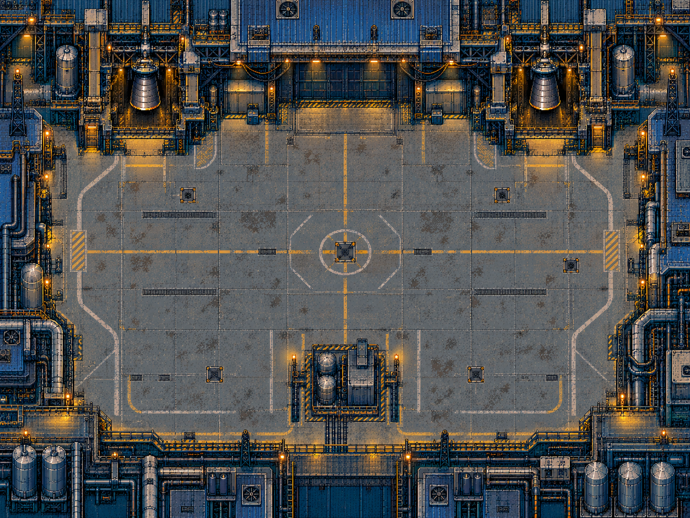
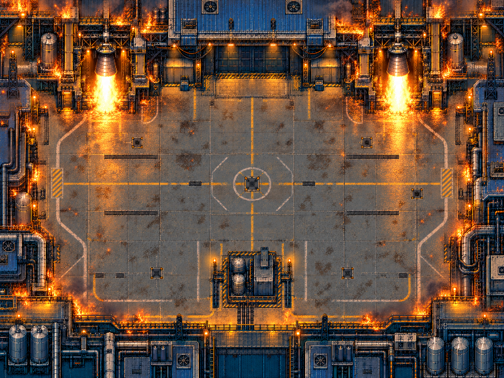

Fonte completa: fases 14 e 15


As duas fontes inteiras foram geradas antes de qualquer recorte. O lugar possui hangar, fachadas, dutos, gantries e motores integrados ao perímetro. A edição em fogo preserva a geometria.


Paleta global de 16 cores aplicada antes dos recortes. Baias, paredes e fachadas inteiras permitem preservar detalhes numa grade lógica de 2×pixels. Os espelhamentos e a deduplicação são exatos; nenhuma parte é trocada por tiles parecidos. As imagens abaixo foram reconstruídas do atlas e mapa gerados.

Normal: 552 tiles + 79 dos geradores = 631/640.

Fogo: 560 tiles + 64 do rádio = 624/640.
O piso calmo mantém os inimigos legíveis. As cinco máquinas correspondem aos pads da cena; construções do perímetro estão fora dos limites de circulação, e a plataforma central tem colisão. Na ignição, a cena inteira muda atomicamente, sem mostrar um atlas misturado.
Geometria e provas de reconstrução · Prompts e origem das fontes · Pipeline
Os resultados anteriores dos cenários antigos não validam estas novas imagens. Os testes de emulador precisam usar o build conjunto atualizado.